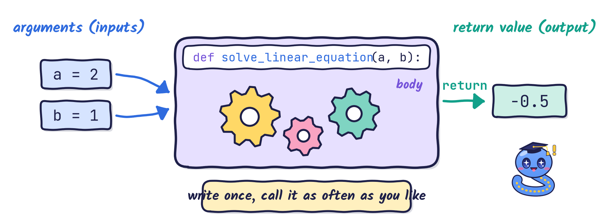
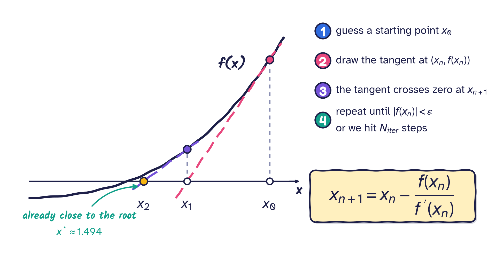
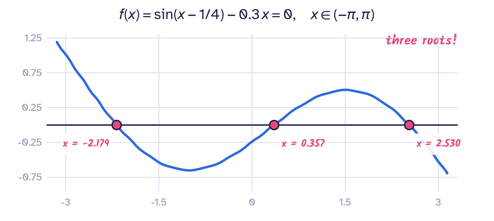
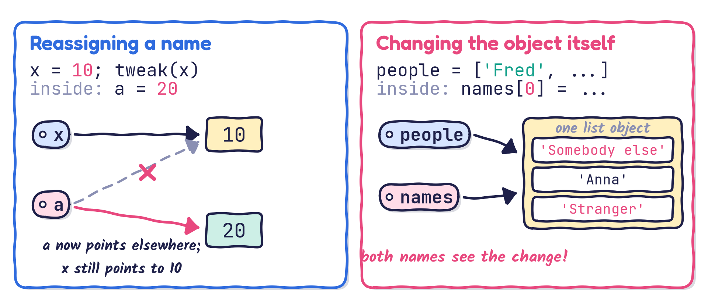
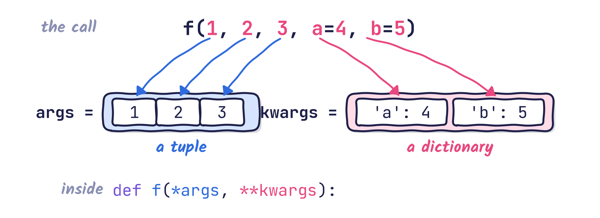

Writing reusable, readable code
By the end of this lecture you should be able to:
*args and **kwargsprint(), max(), len(), …Functions help us to
Golden rule
Do not reinvent the wheel!

Arguments go in, the body does the work, and a return value comes out.
def, the function name, parentheses and a colon; the body is indented.Python stores the docstring and shows it on request:
call_me_maybe? (live demo)help():Once the function is defined, we can call it:
Every value in Python is an object, and a function is an object too.
We call a function by writing parentheses after its name:
Hello there!<function __main__.greet()>Note
Use the parentheses when calling a function, not just the name of the function.
A function definition can declare many input arguments (recall the syntax):
4
7Here the order of a and b does not matter: they play the same role. Can you give me an example in which the positions of the input arguments are important?
Solve the linear equation \(a x + b = 0\):
Here the order matters: the first value is a, the second is b.
What happens, and what does this function return, when \(a = b = 0\)?
Solve 2 x + 1 = 0: -0.5
Solve x + 2 = 0: -2.0
Solve x = 0: 0.0
The equation has no solution.
Solve 0 x + 1 = 0: NoneHow can we remember the meaning of every input argument if the function needs a long list of them?
Use keyword arguments: we state explicitly which argument receives which value.
Functions can also be called with keyword arguments of the form kwarg=value:
Solve 2 x + 1 = 0: -0.5
Solve 2 x + 1 = 0: -0.5a=a?You will often see calls such as function(a=a, b=b, c=c, ...). The name on the left of = is the argument; the value on the right comes from your own variable.
Solve 2 x + 1 = 0: -0.5
Solve 2 x + 1 = 0: -0.5Can you name a scenario that needs many input arguments, where keyword arguments would help?
Let us examine the Newton–Raphson method for solving the algebraic equation \(f(x) = 0\).

To write newton(...) we need: the function \(f\), its derivative \(f'\), a starting point \(x_0\), a tolerance \(\varepsilon\) (stop when \(|f(x)| < \varepsilon\)) and a maximum number of iterations \(N_\text{iter}\).
What happens if we don’t want to supply values for all the input arguments?
Some input arguments can take default values when no value is supplied. Very often we are happy for \(N_\text{iter}\) and \(\varepsilon\) to default to sensible numbers, e.g. \(N_\text{iter} = 10^{4}\) and \(\varepsilon = 10^{-6}\).
This leads to default argument values.
An argument takes its default value when the call does not specify a value for it.
# retries defaults to 4 and reminder to 'Only "yes" or "no"'
def ask_ok(prompt, retries=4, reminder='Only "yes" or "no"'):
"""Ask until the user answers yes or no."""
while True:
ok = input(prompt)
if ok in ('y', 'ye', 'yes'):
return True
if ok in ('n', 'no', 'nah'):
return False
retries = retries - 1
if retries < 0:
print(reminder)
return False # or return NoneThe same function can be called in several ways:
def newton(f, df, x0, tol=1e-6, max_iter=100):
"""Solve f(x) = 0 with the Newton-Raphson method.
f, df : the function and its derivative (functions are objects too!)
x0 : starting guess
tol : stop when |f(x)| < tol
max_iter : give up after this many iterations
Returns the root and the number of iterations used.
"""
x = x0
for k in range(max_iter):
fx = f(x)
if abs(fx) < tol:
return x, k
x = x - fx / df(x)
print("Warning: no convergence after", max_iter, "iterations")
return x, max_iter
x0 = -2.0 -> root = -2.179093 (3 iterations)
x0 = 0.0 -> root = 0.357438 (3 iterations)
x0 = 2.0 -> root = 2.529875 (4 iterations)In this call, which arguments are passed by position, which by keyword, and which take their default value?
f and df are positional; x0 and tol are keyword arguments; max_iter is not given, so it takes its default value 100.
Explanation
tweak(x) makes a a second name for the object 10. No copy is made.a = 20 makes the name a point to a new object; x is untouched, so print(x) gives 10.tweak() has no return statement, so it returns None; tweak_output is None.my_list = ["element 1", "element 2", "element 3"]
list_alias = my_list
print("id(my_list) =", id(my_list))
print("id(list_alias) =", id(list_alias))
print("my_list =", my_list)
print("list_alias =", list_alias)
# Let us change the first element of list_alias
list_alias[0] = "something"
print("After changing list_alias:")
print("my_list =", my_list)
print("list_alias =", list_alias)What output do you expect to see?
my_list = ["element 1", "element 2", "element 3"]
list_alias = my_list # list_alias and my_list name the SAME list
print("id(my_list) =", id(my_list))
print("id(list_alias) =", id(list_alias))
list_alias[0] = "something"
print("After changing list_alias:")
print("my_list =", my_list)
print("list_alias =", list_alias)id(my_list) = 134956939593920
id(list_alias) = 134956939593920
After changing list_alias:
my_list = ['something', 'element 2', 'element 3']
list_alias = ['something', 'element 2', 'element 3']What output do you expect to see?
people (before the call) = ['Fred', 'Anna', 'Bob']
id(people) = 134956939569152
=============== Function call ===============
id(input argument) = 134956939569152
Hello Fred! Hello Anna! Hello Bob!
=============================================
people (after the call) = ['Somebody else', 'Anna', 'Stranger']
a = 20) never affects the caller.names[0] = ...) is visible to everyone who holds it.What do the two print calls show?
['apple'] and then ['apple', 'pear']. The default list is created once, when def runs, and every call shares and modifies it. Use basket=None and create a new list inside the function instead.
return statement.return still returns something: the value None.returnWhat is the value of output?
To return several outputs, return a tuple, a list or a dictionary. The purpose of the function usually suggests which one is best; a tuple is the most common choice.
def find_min_max(array):
"""Return the smallest and largest values of a list."""
min_val, max_val = array[0], array[0]
for i in range(1, len(array)):
if array[i] < min_val:
min_val = array[i]
if array[i] > max_val:
max_val = array[i]
return min_val, max_val # packs both values into one tuple
min_val, max_val = find_min_max([-1, -4, 3, 5, 2]) # unpacks the tuple
print(f"min value = {min_val}, max value = {max_val}")min value = -4, max value = 5Note: do not use min and max as variable names; they are built-in Python functions.
What is the code for finding the minimum and maximum of the list \(\begin{bmatrix} 1 & 3 & 5 & \ldots & 999 \end{bmatrix}\)?
*argsSyntax
args.* packs all the extra positional arguments into one tuple, args. Access them by indexing or with a loop.*args can only be given by keyword (see sep in the concat example soon).*args: exampleUsing this function:
We want a function concat that joins all its inputs with a separator, which defaults to "--":
concat("earth", "mars", "venus") returns "earth--mars--venus"concat("Mech", "Engineering", "Skills", "3", sep=" ") returns "Mech Engineering Skills 3"First, a useful string method, join:
This -- is -- a -- short -- sentenceHow can we define the function concat as described above?
Define concat, receiving an arbitrary number of inputs, so that
concat("earth", "mars", "venus") returns "earth--mars--venus"concat("Mech", "Engineering", "Skills", "3", sep=" ") returns "Mech Engineering Skills 3"**kwargsSyntax
Best shown by example
{'one': 1, 'two': 2, 'three': 3, 'four': 4}one=1, …, four=4 into a dictionary.kwargs as a regular dictionary.kwargs (short for keyword arguments) is the widely used convention.*args and **kwargs
The stars also work the other way round: in a call, * unpacks a list or tuple into positional arguments and ** unpacks a dictionary into keyword arguments.
-0.5
-0.5What does print(*[1, 2, 3], sep="-") display?
1-2-3: the list is unpacked into three separate arguments, which print joins with sep.
def, document with a docstring, call with ().return, a function returns None; return a tuple to give back several values.*args collects extra positional arguments in a tuple; **kwargs collects extra keyword arguments in a dictionary.